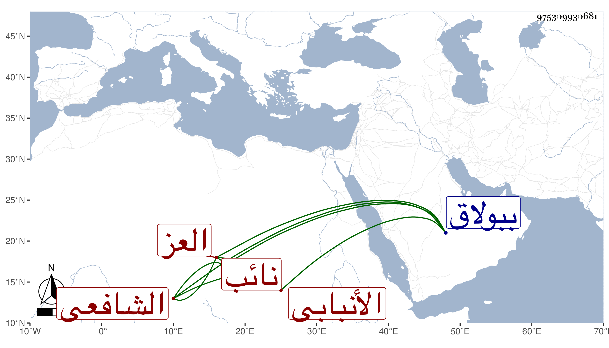

0902Sakhawi.DawLamic.ITO20230111-ara1.EIS1600.975309930681
Biography ID: 975309930681
614
عبد العزيز بن يوسف العز الأنبابي الشافعي نائب الحسبة . ناب في القضاء أيضا وخطب بجامع الخطيري ببولاق وباشر في أوقافه وابتنى دورا ببولاق وغيرها ولم يكن بالمرضي في مباشراته ونياباته . مات يوم الجمعة سادس شوال سنة اثنتين وسبعين ودفن من الغد عفا الله عنه وإيانا .
